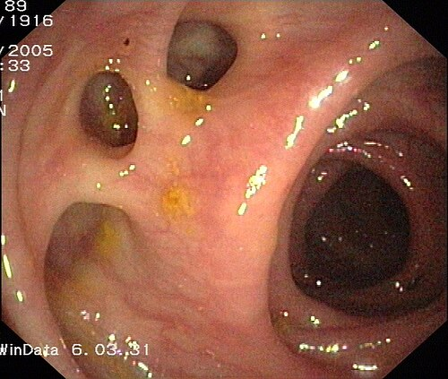
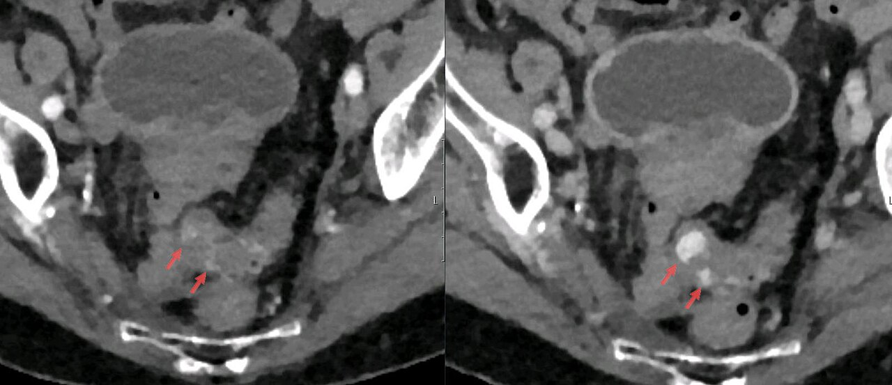
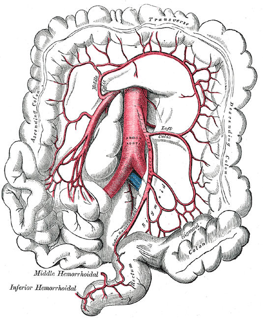
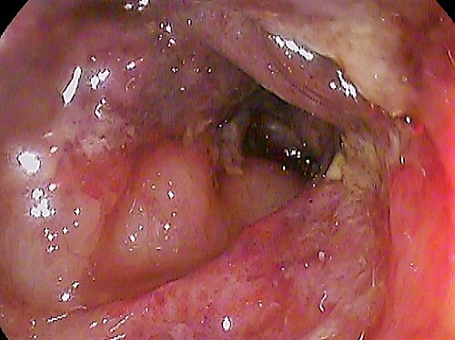
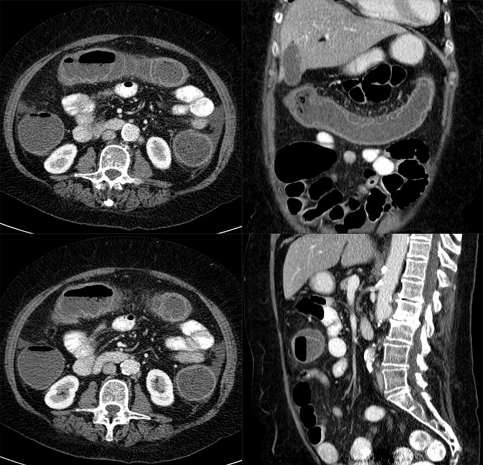

דיון מקרים: דימום מדרכי העיכול התחתונות
שלושה מטופלים עם דם מה-rectum: דימום מדיברטיקול, דימום מסיבי עם הלם ודלקת איסכמית של ה-colon. איך מוצאים את המקור ומתי מנתחים
בסוף המפגש תדעו
- לבנות אבחנה מבדלת של דם מה-rectum ולזכור שחלק מהדימומים מגיעים מלמעלה
- להעריך חומרה ולהתחיל החייאה, כמו בדימום עליון
- לבחור את הבדיקה הנכונה למטופל: קולונוסקופיה במטופל יציב, CTA ואנגיוגרפיה בדימום פעיל וקשה
- להכיר את ההתוויות לניתוח ולהבין למה כמעט תמיד מנסים למקם את הדימום לפני כריתה
- לזהות דלקת איסכמית של ה-colon ולהבין את אספקת הדם של ה-colon
דימום תחתון: מה צריך לדעת לפני המקרים
- דימום תחתון: מקורו מתחת ל-ligament of Treitz, ברוב המקרים ב-colon
- הסימן: דם אדום או בצבע בורדו, לעיתים עם קרישים. דימום מה-right colon יכול לתת לעיתים נדירות מלנה
- הסיבה השכיחה: דיברטיקולוזיס
- אנטומי: דיברטיקולוזיס
- כלי דם: אנגיודיספלזיה, איסכמיה, נזק מקרינה
- דלקתי: קוליטיס זיהומית, מחלות מעי דלקתיות
- גידולי: פוליפים, סרטן ה-colon
- anal canal: טחורים, פיסורה, דליות ב-rectum
- אחרי טיפול: כריתת פוליפ, ביופסיה
דם טרי בלי כאב
- דופק 104, לחץ דם 112/70. אחרי ליטר נוזלים: דופק 88
- בטן רכה ולא רגישה. בבדיקה רקטלית: דם טרי וקרישים, בלי גוש
- המוגלובין 11.2, אוריאה וקראטינין תקינים
- קולונוסקופיה לפני 4 שנים: "דיברטיקולוזיס ב-sigmoid colon"
- מה מכוון למקור תחתון ומה הסיבה הסבירה?
- איפה הוא צריך להיות מאושפז?
- איזו בדיקה ומתי?
- אם בקולונוסקופיה רואים רק דיברטיקולות בלי דימום פעיל, האם סיימנו?
דימום מדיברטיקול: למה בלי כאב?
- מקור תחתון: קרישים בצואה מרחיקים ממקור עליון (יחס סבירות 0.05). גם יחס אוריאה לקראטינין תקין
- דיברטיקולות "כוזבות": רק רירית ושכבת שריר הרירית בולטות החוצה, ב-mesenteric side, בדיוק במקום שבו כלי הדם הקטנים (vasa recta) חודרים את דופן השריר
- דיברטיקולות ב-40% מבני 50–60 ובמעל 60% מבני 80 ומעלה
- דיברטיקולוזיס היא הסיבה השכיחה לדימום תחתון מסיבי. דימום בזמן דלקת חריפה של דיברטיקול נדיר. לכן כאב עם דימום מכוון לאבחנה אחרת, כמו איסכמיה או מחלת מעי דלקתית
- הדימום בדרך כלל ללא כאב. בשינוי בהרגלי היציאה חושבים על גידול

מטופל יציב: קולונוסקופיה, אבל לא בלילה
- ההתחלה זהה לדימום עליון: גישה ורידית רחבה, מיון לרמת הטיפול, חמצן ונוזלים. עירוי לפי אותם ספים (7. בחולה לב: 8)
- קולונוסקופיה היא הבדיקה המועדפת במטופל יציב: ממקמת, לוקחת ביופסיה ומטפלת
- מתי: בתור הפנוי הבא, אחרי הכנת מעי טובה. אין הבדל בדימום חוזר או בעירויים בין פחות מ-24 שעות לבין 24–96 שעות
- מקור ודאי או אפשרי נמצא ב-45–90% מהקולונוסקופיות
הלם במיון: דם, עוד דם ועוד דם
- לחץ דם 82/50 אחרי שני ליטרים, דופק 128
- המוגלובין 7.0, ממשיך לדמם על המיטה
- קיבל כבר 3 מנות דם בשש שעות
- מה צריך לשלול לפני שמתמקדים ב-colon?
- האם יש מקום לקולונוסקופיה עכשיו?
- מה הבדיקה הראשונה ומה הצעד שאחריה?
- מתי הוא הולך לחדר ניתוח ואיזה ניתוח?
קודם למקם, אחר כך לעצור
- לשלול מקור עליון: בדם מסיבי עם הלם, 10–15% מגיעים מלמעלה. יעוץ גסטרו. גם כירורגיה ורדיולוגיה פולשנית כבר עכשיו
- החייאה: בדימום קשה ומתמשך מנות ביחס 1:1:1, כמו בחבלה
- CTA היא הבדיקה הראשונה בדימום משמעותי ומתמשך עם פגיעה המודינמית. מזהה דימום של 0.3–0.5 מ״ל לדקה, רגישות 85% וסגוליות 92%
- CTA חיובי: אנגיוגרפיה מהר, רצוי בתוך 90 דקות, אחרת הדימום עלול להיעצר ונפספס את האמבוליזציה
- אנגיוגרפיה: צריכה דימום של 0.5–1 מ״ל לדקה. בלי מיקום מוקדם מתחילים ב-SMA. הצלחה 25–70%
- אמבוליזציה סופר-סלקטיבית: אפשרית ב-98%, סיבוכים ב-4.6% (בעיקר אוטם או כיב במעי)

כל בדיקה ומה היא דורשת
האמבוליזציה נכשלה. מה עכשיו?
מתי מנתחים
- חוסר יציבות המודינמית מתמשך עם דימום פעיל
- דימום חוזר ומתמשך
- יותר מ-4 מנות דם ב-24 שעות עם דימום פעיל או חוזר
קודם כאב, אחר כך דם
- חום 37.9, דופק 96, לחץ דם תקין
- רגישות בצד שמאל, בלי סימני צפקת
- לויקוציטוזיס קל, לקטט תקין
- מה האבחנה הסבירה ולמה דווקא בצד שמאל?
- במה זה שונה מאיסכמיה מזנטרית חריפה?
- איך מאשרים את האבחנה?
- מה הטיפול ומה הסימנים שמחייבים ניתוח?
אספקת הדם של ה-colon ואזורי קו פרשת המים

👆 לחצו על אזור בציור כדי לקרוא עליו
ה-ileocolic artery הוא ענף סופי של ה-SMA. לכן הצד הימני רגיש לתסחיף ולזרימה נמוכה (אי-ספיקת לב, דימום, אלח דם). איסכמיה של צד ימין בלבד: פחות דם ויותר ניתוחים. מחייבת CTA לשלילת איסכמיה מזנטרית חריפה.
ענף של ה-superior mesenteric artery (SMA). באנגיוגרפיה לדימום תחתון בלי מיקום מוקדם מתחילים ב-SMA, כי שם נמצאים רוב מקורות הדימום. אחר כך ה-IMA וה-celiac trunk.
קו פרשת המים בין ה-SMA ל-IMA. ה-marginal artery (Drummond) חסר כאן אצל עד 18% מהאנשים. בחלק מהמחקרים: עד 50%. מקום שכיח לאיסכמיה. מנתחים נמנעים מחיבור כאן.
בניתוחי aorta, או כשקושרים את העורק בניתוח בטן, האספקה ל-sigmoid colon ולצד שמאל תלויה בעורקים העוקפים. אם הם לא מספיקים: איסכמיה של ה-sigmoid colon ושל צד שמאל.
ענף של ה-IMA. צד שמאל, כולל ה-splenic flexure, הוא המקום השכיח ביותר לדלקת איסכמית. הדימום בה בדרך כלל קל.
ה-sigmoid colon וה-descending colon הם המקום הטיפוסי לדיברטיקולות. הן נוצרות ב-mesenteric side, במקום שבו כלי הדם הקטנים חודרים את השריר. לכן הן יכולות לדמם. זה גם המקום השני בשכיחותו לאיסכמיה.
אזור פרשת מים שני: מקבל דם מה-superior rectal artery ומה-sigmoid arteries, שניהם ענפים סופיים של ה-IMA. ה-rectum עצמו כמעט לא נפגע מאיסכמיה, כי יש לו אספקה גם מה-internal iliac arteries.
דלקת איסכמית של ה-colon
- מחלה של כלי דם קטנים. לרוב קלה וחולפת. באיסכמיה מזנטרית חריפה יש חסימה של עורק גדול וכאב שאינו תואם את הבדיקה
- מי בסיכון: מבוגרים, נשים, מצבי זרימה נמוכה (אי-ספיקת לב, אלח דם), פרפור פרוזדורים, ניתוחי aorta, עצירות ותרופות שגורמות לה
- הסיפור: כאב פתאומי ועוויתות, טנזמוס ודם. הכאב מקדים את הדימום. השילוב קיים בכמחצית. הדימום קל ורק לעיתים נדירות צריך עירוי
- המיקום השכיח: צד שמאל (כולל ה-splenic flexure) ואחריו ה-sigmoid colon. ברבע מהמקרים רק בצד ימין: פחות דם, יותר ניתוחים ופרוגנוזה גרועה יותר


רוב המטופלים מחלימים בלי ניתוח
מחקרים שכדאי להכיר
כלי ריבוד סיכון לזיהוי מי שלא יזדקק להתערבות. CTA מקבלת תפקיד גדול יותר בדימום קשה. רוב המאושפזים יעברו קולונוסקופיה לא דחופה, כי קולונוסקופיה בתוך 24 שעות לא שיפרה תוצאות כמו דימום חוזר. גם המלצות על חזרה לנוגדי קרישה וטסיות
Sengupta N et al. Am J Gastroenterol 2023;118:208-31במטופל לא יציב עם חשד לדימום פעיל: CTA לפני טיפול אנדוסקופי או צנתורי. לא להפסיק אספירין במניעה שניונית. אם הופסק: לחדש בתוך 5 ימים. בדימום משמעותי עוצרים זמנית נוגדי קרישה ישירים
Triantafyllou K et al. Endoscopy 2021;53:850-681,679 מטופלים עם דימום מדיברטיקול. קשירה בגומייה הורידה דימום חוזר מוקדם (OR 0.46) ומאוחר (0.62) וצורך באנגיוגרפיה, בלי הבדל בעצירה הראשונית או בתמותה. נקב ב-0.31%
Kobayashi K et al. Endoscopy 2022;54:735-44חמישה דברים לקחת למחלקה
- רוב הדימומים התחתונים נעצרים לבד. מתחילים כמו בדימום עליון: גישה ורידית, חומרה והחייאה
- דם טרי עם הלם: לשלול מקור עליון (10–15%)
- יציב: קולונוסקופיה בתור הבא אחרי הכנה. לא יציב ומדמם: CTA ואז אנגיוגרפיה בתוך 90 דקות
- מנתחים כשהמטופל לא יציב, כשהדימום חוזר או אחרי יותר מ-4 מנות ביממה. כמעט תמיד ממקמים קודם
- כאב ואחריו שלשול דמי במבוגר עם מחלות לב: לחשוב על איסכמיה של ה-colon